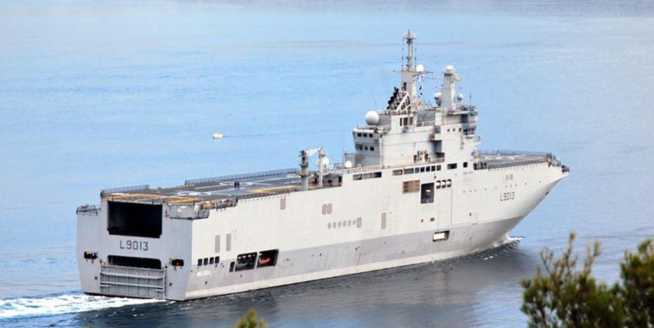
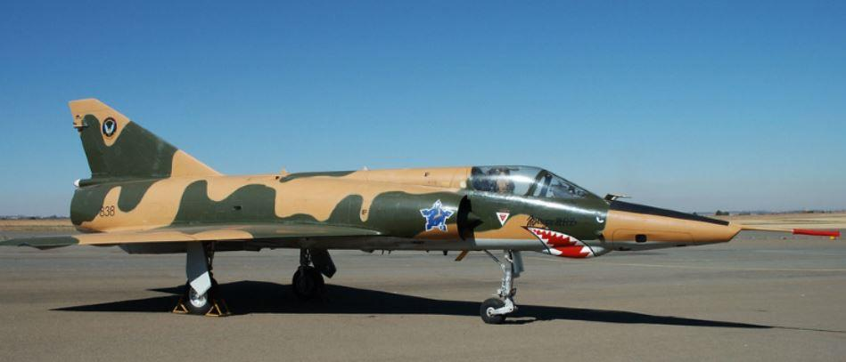
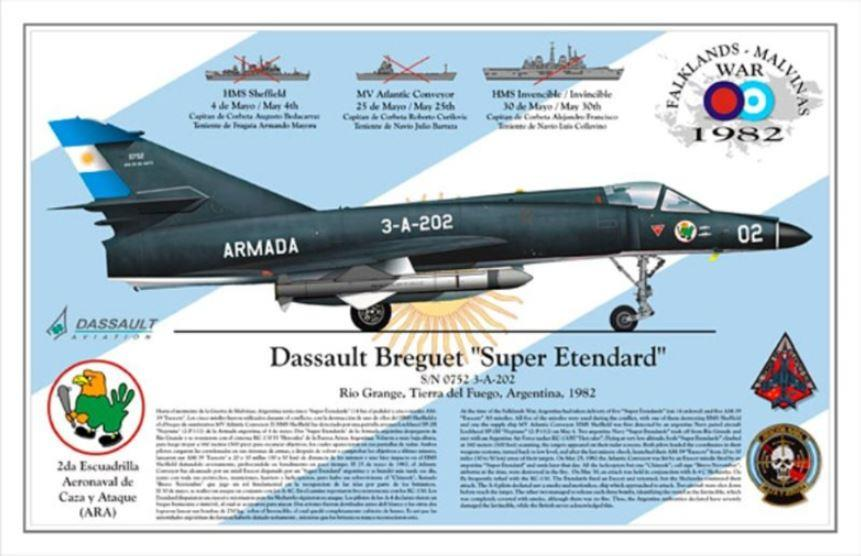
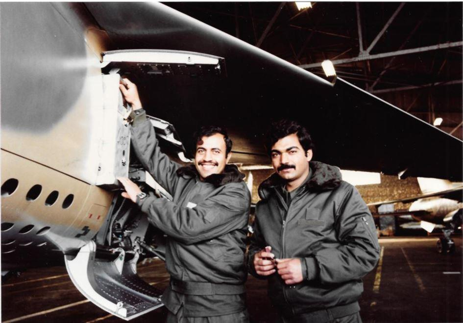
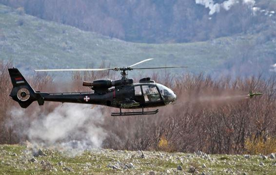

Nous sommes en 2014, et le nocif Bernard-Henri Levy a été une fois de plus invité à la télévision ukrainienne. Entre deux bouffées délirantes antirusses, celui qui arrive à se faire inviter sur tous les plateaux télévisions de France ("normal, il a les clefs" nous a dit un célèbre humoriste contesté) se voit interpellé par la présentatrice un peu débordée par le tourbillon, sur les deux navires porte-hélicoptères de type « Mistral » en achèvement à Saint-Nazaire pour le compte de la Marine Russe. Ce contrat qui est un chiffon rouge pour les milieux atlantistes et les Anglo-saxons, et sur lequel le président Hollande a décidé sans surprise de ne pas statuer dans l’immédiat, donne l’occasion à notre inévitable germanopratin, à travers ce qu’il nous présente comme une confidence, de bien nous faire comprendre que de sérieux intérêts ont pris la mesure de l’offense, et que non, cela ne se fera pas. C’est ce qui arrivera peu après : les équipages russes ont formation sur place repartiront tristement, et ces navires seront finalement achetés par la Marine égyptienne (la Marine Nationale ayant quant à elle rapidement fait comprendre qu’ayant déjà reçu pour elle trois de ces bâtiments fort laids au demeurant, elle ne pouvait décemment faire plus…) Malgré un habillage de façade, et un fort honnête remboursement de la partie russe, le coût de cette pantalonnade n’aura pas été négligeable pour le contribuable français. Et quant à l’image de marque du vendeur, personne n’osera affirmer qu’elle en sera sortie grandie.
Ce que beaucoup de personnes ignorent, et ce sera notre but que de le rappeler dans ce qui suit, c’est que de tels déplorables revirements ont déjà eu lieu par le passé, sous la poussée de forces multiples, allant des associations diverses aux gouvernements étrangers, aux industriels concurrents et à certains services d’état peu au fait des réalités industrielles de ce qui reste (malgré tout) un des grands succès de la France de ces cinquante dernières années.
Ainsi dès l’indépendance du nouvel état d’Israël, la France par ailleurs impliquée dans le conflit d’Algérie, mettra tout son point pour aider le jeune état à constituer ce qui lui permettra de se défendre. Avions Mystère IV, Super-Mystère B2, Vautour, Mirage IIIC, Noratlas, hélicoptères Super-Frelon, missiles Jéricho, vedettes Combattante, tout aura été fait pour constituer une des plus efficaces forces aériennes de la région…. Lors de la crise de Suez en 1956 des escadrons de chasse français opéreront à partir de bases israéliennes, face à l’Égypte - jusqu’à une certaine année 1967, où après la guerre des Six jours, le général de Gaulle entrainera son pays dans un changement d’alliance qui dure encore à ce jour.
Mystère IV
Mirage III
Nord Atlas
M. Couve de Murville, ministre des affaires étrangères, dira qu’il était temps d’arrêter cette "coucherie" entre les états-majors des deux pays…. et ce sont une cinquantaine de nouveaux Mirages 5 qui se trouveront placés sous embargo, stockés pendant quelques années une fois construits, avant que l’on force l’Armée de l’air française à les intégrer, alors qu’elle n’avait pas besoin de modèle simplifié prévu pour opérer sur de petites distances dans des pays ensoleillés. Beaucoup seront déçus dans ce petit pays courageux, telle le Premier ministre Golda Meir qui déclara « on ne peut pas trahir ses amis et sa parole pour du pétrole ! » …. il sembla bien que si.
Au cours des années, c’est ce grand pays que fut l’Afrique du Sud qui bénéficia de l’aide française pour se constituer des forces armées de toute première qualité – la Grande-Bretagne ayant cessé dès le début des années soixante (gouvernements travaillistes) de fournir ces équipements. C’est Pierre Messmer qui de Ministre de la Défense à Premier Ministre des présidents de Gaulle et Pompidou, veilla à ce que Pretoria ne manque de rien. Invité bien plus tard à l’inauguration du monument de Delville Wood dans les années 80, au plus fort de la contestation "anti-apartheid" Pierre Messmer qui était retiré de la politique depuis longtemps dira « je conserve mes amis » - il s’était battu en Lybie au côté des Sud-Africains contre l’Afrika-Korps.
Ce seront donc des dizaines de Mirages III puis de Mirages F1, des avions Transall, des hélicoptères Alouettes et Pumas, des missiles Crotale, des sous-marins Daphné, des automitrailleuses Panhard…. qui prendront le chemin de ce pays qui était alors en toute discrétion le plus gros client de cette industrie, jusqu’à ce que le président Giscard d’Estaing décide finalement de se soumettre aux embargos de l’ONU, plaçant nos nobles amis en grande difficulté dans leur guerre en Namibie /Angola des années 80 (sous-marins et avisos alors pratiquement terminés, partirent ensuite au Pakistan et en Argentine…)

Mirage III sud-africain
Mirage F1
De nombreuses voies parallèles de production et développement d’armements furent néanmoins mises en place, à titre amical, commercial ou selon les moments avec le silence bienveillant des autorités françaises, pour pallier le manque de pièces détachées notamment, mais l’élection de François Mitterrand en 1981 devait porter un coup définitif à la coopération avec cette grande nation qui s’était battue à nos côtés contre le nazisme. Il est à noter que la France de toutes façons perdit toute influence en Afrique du Sud dès lors qu’elle cessa d’y vendre des armes – ce qui arriva après la fin du régime de ségrégation raciale, au début des années 80. En représailles des temps anciens, les nouveaux contrats furent passés avec la Suède, l’Allemagne et l’Italie principalement…. et c’est ainsi que la France resta brouillée avec les deux camps, on n’est pas toujours payé de ses trahisons.
De l’autre côté de l’Atlantique Sud, c’était dans la tranquillité que l’Argentine des années 70 s’était équipée, en avions Mirages III… et sur la fin d’un escadron de Super-Etendards avec les missiles Exocets correspondants d’attaque en mer, un beau contrat arrivé par surprise pour les industriels français.
Il est quelque part regrettable que le manque de coordination des militaires argentins au pouvoir lors de l’attaque des îles Falklands n’ait pas laissé le temps à l’Aéronavale argentine (l’Armada) de finir de recevoir ces fameux missiles air-mer : sur les 20 commandés, 5 avaient été livrés, qui fort bien utilisés infligèrent de lourdes pertes à la Royal Navy. On ne peut que spéculer sur ce qui se serait passé si les Argentins avaient disposé de la totalité des missiles commandés….
Toujours est-il que la France socialiste arrêta immédiatement toute livraison et coopération, et fournit même de surcroit aux Britanniques de nombreuses occasions de s’entrainer au combat aérien face aux chasseurs français, ce qui fut tristement noté à Buenos-Aires. On aurait pu avoir l’élégance de ne pas prendre parti – au lieu de quoi, on choisit une fois de plus de trahir des gens avec qui l’ont venait de coopérer. À l’issue de ce conflit perdu par les Argentins, la coopération reprit un peu avec ceux-ci, mais le mal avait été fait. À noter que les Britanniques se persuadèrent par la suite qu’il y avait eu aide technique de l’industrie française pour la mise en œuvre des missiles, et que donc l’on perdit encore une fois la sympathie des deux côtés….
Et l’histoire devait se répéter de façon encore plus flagrante au tournant des années 90 : pendant près de quinze ans, et sur l’initiative du premier Ministre Jacques Chirac confortée ensuite par François Mitterrand, c’est l’Irak baasiste de Saddam Hussein qui bénéficia de toute l’expertise de l’industrie d’armement française, à travers de gigantesques contrats dont n’allons nommer que quelques-uns :
Mirages F1 (l’Irak en fut le plus gros client export, plus de 120) missiles Exocets tirés successivement d’hélicoptères Super-Frelons, de Super-Etendards prêtés et enfin de Mirages F1 dernière version pour essayer de bloquer le trafic pétrolier de l’Iran, armements guidés lasers, système de reconnaissance, canons de 155 mm à tir rapide montés sur chars et qui permirent de stopper les offensives de jeunes iraniens fanatisés dans les plaines de Bassorah….
Les retours d’expérience parvenaient en France, où avaient été formés des centaines de techniciens et de pilotes (l’auteur de ces lignes fut breveté chasse en leur compagnie) tandis que des dizaines de coopérants français œuvraient sur place. Le choix avait été fait, au bénéfice de l’approvisionnement pétrolier, d’une certaine politique arabe et du désir de contenir l’Iran. Une fois la guerre terminée, eut lieu un salon aéronautique à Bagdad, où on leur présentera de nouveaux armements, le Mirage 2000 notamment.
Mirage F1 Irak
Fort bien… mais à l’été 1990, se produisit l’invasion surprise du Koweït par l’Irak, qui pendant un ou deux mois mit le gouvernement français dans l’hésitation (au secours du Koweït accoururent Saoudiens… et Américains, comment chacun sait) Qu’allait-on faire ? un ingénieur de Thomson interrogé alors qu’il arrivait de Bagdad d’où il avait été évacué, déclara à la télévision française « après tout ce que la France a fait pour l’Irak au cours de ces dernières années, il ne saurait être question de se battre contre eux ». On se précipita néanmoins pour prendre en marche le train des Américains, on les suivit dans leur guerre tout en gagnant sarcasmes et moqueries de la part des Anglo-Saxons, après avoir trouvé chez nous des militaires sans mémoire ni états d’âme, pour se battre contre ceux qu’ils avaient aidé peu de temps auparavant, et avoir livré aux forces américaines tout ce qu’on pouvait connaitre sur ce qui avait été vendu à l’Irak….. on y gagna fort logiquement la rancœur des deux camps, y compris du Koweït qu’on était venu libérer - puisque les Américains interdirent aux pilotes de ce pays de reprendre leurs Mirages F1 et leur firent immédiatement acheter des F18.
C’est en Europe que se préparait le prochain acte de ce qui semble devenir un feuilleton : la Yougoslavie pays non-aligné s’il en était - donc par certains côtés, isolé voire faible - avait au fil des années acheté un peu de matériel français (quelques dizaines d’hélicoptères Gazelles) et se préparait à développer en coopération avec Dassault une version monomoteur du chasseur Rafale (le Novi) qui aurait eu de l’intérêt par la suite sur d’autres marchés.

Gazelle serbe
Tout cela partit aux oubliettes dès le début de la guerre civile yougoslave, alors qu’Allemagne, OTAN, monde musulman et surtout Etats-Unis imposèrent à la France de choisir un camp qui n’était pas celui que l’histoire et l’honneur aurait dû lui faire considérer, à défaut de se déclarer neutre. Mais pour l’un comme pour l’autre il aurait fallu du courage, savoir dire non à BHL et à ses commanditaires…
Passons rapidement sur d’autres épisodes : avoir vendu des armes pendant des années aux deux ennemis jurés que sont l’Inde et le Pakistan, en une sorte de balancier rythmé par les changements de direction des étages du Quai d’Orsay, ne pouvait que créer des problèmes et obliger à choisir, à prendre position sur des problèmes de plateaux himalayens gelés qui ne nous concernaient aucunement.
Alouette III - Pakistan
C’est pourtant les mêmes équipements que l’on retrouve des deux côtés ! Hélicoptères Alouettes III par dizaines, sous-marins Scorpènes, vieux avions Mirages III à l’ouest dont le Pakistan est devenu le premier utilisateur mondial, modernes Mirages 2000 et Rafales à l’est, quelle contrariété de devoir vendre des armes à des gens qui font justement la guerre avec vos autres clients… pour l’instant c’est plutôt l’Inde qui aurait les faveurs de nos décideurs.
Plus récemment c’est depuis une dizaine d’années l’Égypte qui avait retrouvé les faveurs de nos politiques et industriels, à coup d’avions Rafales et de bâtiments de guerre (on retrouve les « Mistrals » du début de cet article) …. jusqu’à ce qu’un jeune président français adepte du « en même temps » se laisse aller à des commentaires droits-de-lhommistes du niveau collège en présence du président Sissi, fermant de cette façon brutalement les portes à de nouveaux contrats, comme il fut signifié de la façon la plus claire à l’issue de l’incident à l’attaché d’armement en poste au Caire….
On pourrait s’accommoder de tout cela si on y trouvait un fil conducteur, une politique bien pesée de l’intérêt national, qui aurait même le droit d’être cynique si elle était cohérente, si elle dépendait d’autre chose que du pouvoir des associations du moment, du petit monde pseudo-intellectuel parisien, sans oublier les lobbys américains, leurs relais en France (Young Leaders) et enfin l’inévitable compétition de l’industrie étrangère, toujours prête à exploiter nos moindres failles. Et malheureusement, au fil de tout cela, il y a des hommes, qui se sont battus dans leurs pays pour des conflits qui étaient les leurs, qui sont venus en France se faire former, qui ont bénéficié sur place et pendant des années de l’aide et de la sympathie française, pour ensuite se faire abandonner, et en général au pire moment pour eux. On ne m’ôtera pas de l’idée que beaucoup de ces petites lâchetés brouillonnes auraient pu être évitées.

Partager cette page